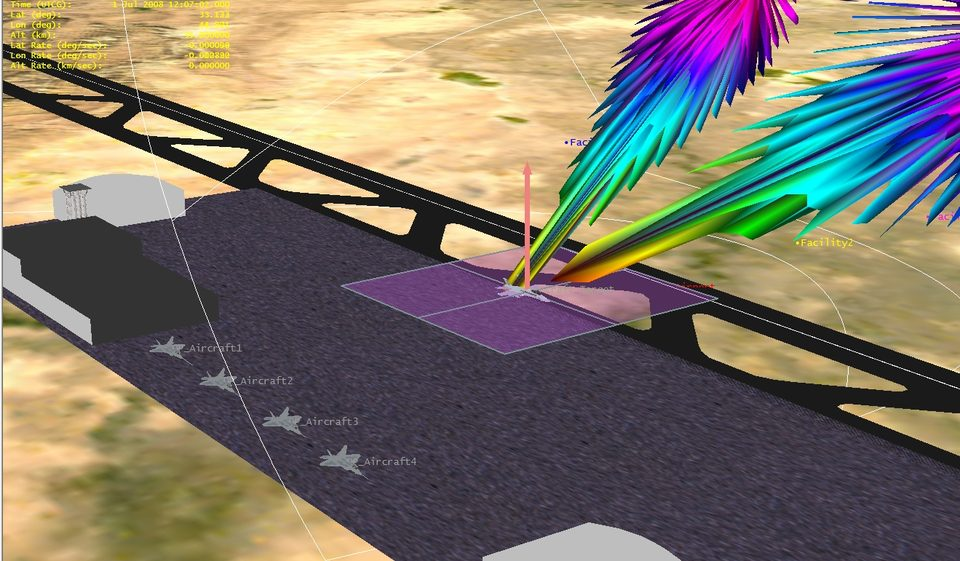

연구실적 · 국내전문학술지
STK를 이용한 고해상도 위성 SAR 운용 및 표적물 추출 기법
High Resolution Spaceborne SAR Operation and Target Recognition Simulator Using STK

초록
고해상도 위성 SAR 영상은 주파수 특성, 안테나 설계 변수, 시스템 내부 잡음 및 간섭 신호에 영향을 많이 받으며, 특히 표적의 RCS(Radar Cross Section)에 따라 표적 특성의 품질이 달라지기 때문에 영상 예측을 위한 시뮬레이션이 복잡해진다. 본 논문에서는 STK(Systems Tool Kit)과 매트랩을 결합하여 작성한 SAR 운용 시뮬레이터를 구축하고, 추출된 데이터를 적용하여 SAR 시뮬레이션을 수행한다. 점 표적의 품질을 판별할 수 있는 중요 변수 특성을 분석하며, 향후 위성 SAR 영상의 검보정에 활용할 수 있음을 보인다. 또한, 위성의 궤도 위치에 따라 변화하는 표적의 RCS를 적용하고, 발생 가능한 RF 간섭 신호를 반영하여 SAR 영상에서의 표적물 품질변화 예측을 수행할 수 있는 방안을 제시한다.
사이트 원문 표기
이보윤, 이슬기, 이우경, “STK를 이용한 고해상도 위성 SAR 운용 및 표적물 추출 기법”, 한국전자파학회논문지, 제24권 3호, 2013년 3월
BibTeX
@article{Lee_2013,
title={High Resolution Spaceborne SAR Operation and Target Recognition Simulator Using STK},
volume={24},
ISSN={1226-3133},
url={http://dx.doi.org/10.5515/KJKIEES.2013.24.3.299},
DOI={10.5515/kjkiees.2013.24.3.299},
number={3},
journal={The Journal of Korean Institute of Electromagnetic Engineering and Science},
publisher={Korean Institute of Electromagnetic Engineering and Science},
author={Lee, Bo-Yun and Lee, Seul-Ki and Lee, Woo-Kyung},
year={2013},
month=Mar,
pages={299–309}
}